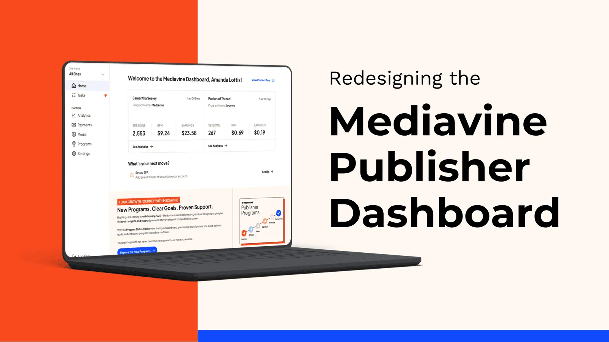

Featured work
See all projects
Case studies and workshops on product design, accessibility and the psychology behind good UI.


Kind words
What it’s like to work with Amanda.
Working alongside Amanda for over three years gave me a front-row seat to what exceptional UX leadership looks like in practice. As Director of UX at Mediavine, she was instrumental in helping our teams build a shared workflow from the ground up. She brought clarity, collaboration, and a genuine partnership mindset to every stage of that process.
Kenrika MazuchDirector of Project Management at Mediavine
Amanda created an environment that was genuinely creative, thoughtful, and safe to explore ideas. She has a rare ability to balance empathy with direction, giving her team the space to think big while still guiding us toward real, shippable outcomes. Under her leadership, our small team was able to research, design, and launch a completely reimagined product used by thousands of people.
Matthew WingerSr. Product Designer at Mediavine
Amanda not only makes her team better — she makes other teams better. Whether it was guiding junior PMs through a session on user-centered design or taking the initiative to include our brand design team in trainings, she is an expert at exerting influence over stakeholders without authority.
Matt GrisafiFormer VP of Product at Mediavine
Experience
See all
Nearly a decade leading design across product, brand and content.
Learn more